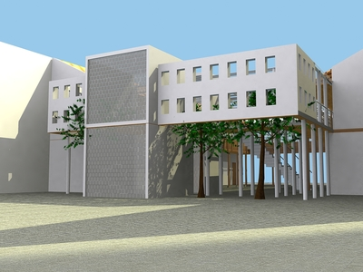

INTERVENCIÓN EN EL ESPACIO PÚBLICO DEL CENTRO HISTÓRICO DE LATACUNGA
PLANTAS
IMÁGENES

casa pasaje Vicente León
nueva plaza colegio Vicente León
nueva plaza colegio Vicente León
nueva plaza colegio Vicente León

nueva plaza colegio Vicente León
MEMORIA
Se propone la unión del Centro Histórico con dos elementos que la ciudad ha dado la espalda, el río Cutuchi que representa un área natural importante y, el monte El Calvario donde se ubica la Virgen de La Merced, elemento que reclama su revalorización como ícono cultural. Así, se generan una serie de recorridos que unen la natura con la cultura y, recogen los espacios públicos y las edificaciones más importantes de Centro Histórico. Adicionalmente, se identifican ciertos lugares donde se desarrollan propuestas arquitectónicas.
Proyecto: Patricio Guerrero Segovia
Equipo de apoyo: Verónica Guerrero, Gonzalo Oviedo, Héctor Paredes, Leonardo Miño.
Área de proyecto: 206.000 m2
Año de proyecto: 2012
Encargado por: Municipio de Latacunga
Ubicación: Latacunga, Ecuador